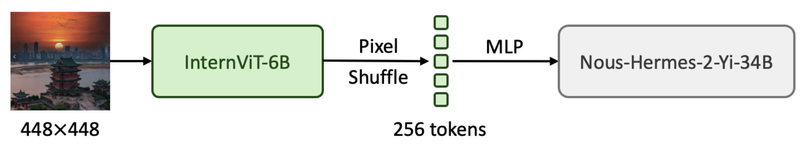

InternVL 1.0-1.3: Scaling up Vision Foundation Models and Aligning for Generic Visual-Linguistic Tasks
InternVL's Blog
InternVL-Chat-V1.2-Plus
Date: 2024/02/21
Developed by: Zhe Chen, Weiyun Wang, Wenhai Wang, Erfei Cui, Zhangwei Gao, Xizhou Zhu, Lewei Lu, Tong Lu, Yu Qiao, Jifeng Dai
InternVL-Chat-V1.2-Plus uses the same model architecture as InternVL-Chat-V1.2, but the difference lies in the SFT dataset. InternVL-Chat-V1.2 only utilizes an SFT dataset with 1.2M samples, while our plus version employs an SFT dataset with 12M samples.
Performance
* Proprietary Model † Training Set Observed
| name | image size | MMMU (val) |
MMMU (test) |
MathVista (testmini) |
MMB (test) |
MMB−CN (test) |
MMVP | MME | ScienceQA (image) |
POPE | TextVQA (val) |
SEEDv1 (image) |
VizWiz (test) |
GQA (test) |
|---|---|---|---|---|---|---|---|---|---|---|---|---|---|---|
| GPT-4V* | unknown | 56.8 | 55.7 | 49.9 | 77.0 | 74.4 | 38.7 | 1409/517 | - | - | 78.0 | 71.6 | - | - |
| Gemini Ultra* | unknown | 59.4 | - | 53.0 | - | - | - | - | - | - | 82.3 | - | - | - |
| Gemini Pro* | unknown | 47.9 | - | 45.2 | 73.6 | 74.3 | 40.7 | 1497/437 | - | - | 74.6 | 70.7 | - | - |
| Qwen−VL−Plus* | unknown | 45.2 | 40.8 | 43.3 | 67.0 | 70.7 | - | 1681/502 | - | - | 78.9 | 65.7 | - | - |
| Qwen−VL−Max* | unknown | 51.4 | 46.8 | 51.0 | 77.6 | 75.7 | - | - | - | - | 79.5 | - | - | - |
| LLaVA−NEXT−34B | 672x672 | 51.1 | 44.7 | 46.5 | 79.3 | 79.0 | - | 1631/397 | 81.8 | 87.7 | 69.5 | 75.9 | 63.8 | 67.1† |
| InternVL−Chat−V1.2 | 448x448 | 51.6 | 46.2 | 47.7 | 82.2 | 81.2 | 56.7 | 1687/489 | 83.3 | 88.0 | 72.5 | 75.6 | 60.0 | 64.0† |
| InternVL−Chat−V1.2−Plus | 448x448 | 50.3 | 45.6 | 59.9 | 83.8 | 82.0 | 58.7 | 1625/553 | 98.1† | 88.7 | 74.1† | 76.4 | 59.5 | 66.9† |
- MMBench results are collected from the leaderboard.
- Update (2024-04-21): We have fixed a bug in the evaluation code, and the TextVQA results have been corrected.
InternVL-Chat-V1.2
Date: 2024/02/12
Developed by: Zhe Chen, Weiyun Wang, Wenhai Wang, Erfei Cui, Zhangwei Gao, Xizhou Zhu, Lewei Lu, Tong Lu, Yu Qiao, Jifeng Dai
We are excited to introduce InternVL-Chat-V1.2. Inspired by LLaVA-NeXT-34B, we have also adopted Nous-Hermes-2-Yi-34B as the language model. Below is the pipeline.

From the experimental results, we've observed that a stronger language model (34B) can better leverage the powerful capabilities of our vision foundation model (InternViT-6B).
For better training reproducibility, we follow the minimalist design and data efficiency similar to LLaVA-NeXT. To reduce training costs, we provide a pre-trained MLP projector and only employ around 1 million visual instruction tuning samples for SFT. Our model has a total of 40 billion parameters and can be trained within 1.5 days using 32 A100 GPUs. The code, data, and model will be made publicly available.
Data Preparation
Inspired by LLaVA-NeXT, we adopted a data-efficient SFT strategy to train InternVL-Chat-V1.2, utilizing approximately 1.2M of visual instruction tuning samples in total, all of which are fully open-source. In a macro sense, we build upon ShareGPT-4V and additionally integrate LLaVA-ZH, DVQA, ChartQA, AI2D, DocVQA, GeoQA+, and SynthDoG-EN. Most of the data remains consistent with LLaVA-NeXT.
Performance
* Proprietary Model
| name | image size | MMMU (val) |
MMMU (test) |
MathVista (testmini) |
MMB (test) |
MMB−CN (test) |
MMVP | MME | ScienceQA (image) |
POPE | TextVQA | SEEDv1 (image) |
VizWiz (test) |
GQA (test) |
|---|---|---|---|---|---|---|---|---|---|---|---|---|---|---|
| GPT-4V* | unknown | 56.8 | 55.7 | 49.9 | 77.0 | 74.4 | 38.7 | 1409/517 | - | - | 78.0 | 71.6 | - | - |
| Gemini Ultra* | unknown | 59.4 | - | 53.0 | - | - | - | - | - | - | 82.3 | - | - | - |
| Gemini Pro* | unknown | 47.9 | - | 45.2 | 73.6 | 74.3 | 40.7 | 1497/437 | - | - | 74.6 | 70.7 | - | - |
| Qwen-VL-Plus* | unknown | 45.2 | 40.8 | 43.3 | 67.0 | 70.7 | - | 1681/502 | - | - | 78.9 | 65.7 | - | - |
| Qwen-VL-Max* | unknown | 51.4 | 46.8 | 51.0 | 77.6 | 75.7 | - | - | - | - | 79.5 | - | - | - |
| LLaVA−NEXT−34B | 672x672 | 51.1 | 44.7 | 46.5 | 79.3 | 79.0 | - | 1631/397 | 81.8 | 87.7 | 69.5 | 75.9 | 63.8 | 67.1 |
| InternVL−Chat−V1.2 | 448x448 | 51.6 | 46.2 | 47.7 | 82.2 | 81.2 | 56.7 | 1687/489 | 83.3 | 88.0 | 72.5 | 75.6 | 60.0 | 64.0 |
- MMBench results are collected from the leaderboard.
- In most benchmarks, InternVL-Chat-V1.2 achieves better performance than LLaVA-NeXT-34B.
- Update (2024-04-21): We have fixed a bug in the evaluation code, and the TextVQA result has been corrected to 72.5.
Training (SFT)
We provide slurm scripts for multi-node multi-GPU training. You can use either 32 or 64 GPUs to train this model. If you use 64 GPUs, training will take approximately 18 hours.
The hyperparameters used for finetuning are listed in the following table.
| Hyperparameter | Trainable Param | Global Batch Size | Learning rate | Epochs | Max length | Weight decay |
|---|---|---|---|---|---|---|
| InternVL-Chat-V1.2 | 40B (full model) | 512 | 1e-5 | 1 | 2048 | 0.05 |
InternVL-Chat-V1.1
Date: 2024/01/24
Developed by: Zhe Chen, Wenhai Wang, Xizhou Zhu, Lewei Lu, Tong Lu, Yu Qiao, Jifeng Dai
We released InternVL-Chat-V1.1, featuring a structure similar to LLaVA, including a ViT, an MLP projector, and an LLM. In this version, we explored increasing the resolution to 448x448, enhancing OCR capabilities, and improving support for Chinese conversations. Below is an example of the improved capabilities.
InternVL
Date: 2023/12/12
Developed by: Zhe Chen, Jiannan Wu, Wenhai Wang, Weijie Su, Guo Chen, Sen Xing, Muyan Zhong, Qinglong Zhang, Xizhou Zhu, Lewei Lu, Bin Li, Ping Luo, Tong Lu, Yu Qiao, Jifeng Dai
What is InternVL?
We released InternVL, scaling up the ViT to 6B parameters and aligning it with LLM. It is the largest open-source vision/vision-language foundation model (14B) to date, achieving 32 state-of-the-art performances on a wide range of tasks such as visual perception, cross-modal retrieval, multimodal dialogue, etc.
How is InternVL trained?
The training strategy of InternVL consists of three progressive stages, including vision-language contrastive training, vision-language generative training, and supervised fine-tuning. These stages effectively leverage public data from diverse sources, ranging from noisy image-text pairs on the web to high-quality caption, VQA, and multi-modal dialogue datasets.
What can InternVL do?
InternVL is a “Swiss Army Knife” Model. By flexibly combining the vision encoder and the language middleware, InternVL can support various vision or vision-language tasks, including
Visual Perception (click to expand)
- Linear-Probe Image Classification
ViT-22B uses the private JFT-3B dataset.
method #param IN-1K IN-ReaL IN-V2 IN-A IN-R IN-Sketch OpenCLIP-G 1.8B 86.2 89.4 77.2 63.8 87.8 66.4 DINOv2-g 1.1B 86.5 89.6 78.4 75.9 78.8 62.5 EVA-01-CLIP-g 1.1B 86.5 89.3 77.4 70.5 87.7 63.1 MAWS-ViT-6.5B 6.5B 87.8 - - - - - ViT-22B* 21.7B 89.5 90.9 83.2 83.8 87.4 − InternViT-6B (ours) 5.9B 88.2 90.4 79.9 77.5 89.8 69.1 - Semantic Segmentation
- Zero-Shot Image Classification
- Multilingual Zero-Shot Image Classification]
- Zero-Shot Video Classification
| method | decoder | #param (train/total) | crop size | mIoU |
|---|---|---|---|---|
| OpenCLIP-G (frozen) | Linear | 0.3M / 1.8B | 512 | 39.3 |
| ViT-22B (frozen) | Linear | 0.9M / 21.7B | 504 | 34.6 |
| InternViT-6B (frozen) | Linear | 0.5M / 5.9B | 504 | 47.2 (+12.6) |
| ViT-22B (frozen) | UperNet | 0.8B / 22.5B | 504 | 52.7 |
| InternViT-6B (frozen) | UperNet | 0.4B / 6.3B | 504 | 54.9 (+2.2) |
| ViT-22B | UperNet | 22.5B / 22.5B | 504 | 55.3 |
| InternViT-6B | UperNet | 6.3B / 6.3B | 504 | 58.9 (+3.6) |
| method | IN-1K | IN-A | IN-R | IN-V2 | IN-Sketch | ObjectNet |
|---|---|---|---|---|---|---|
| OpenCLIP-G | 80.1 | 69.3 | 92.1 | 73.6 | 68.9 | 73.0 |
| EVA-02-CLIP-E+ | 82.0 | 82.1 | 94.5 | 75.7 | 71.6 | 79.6 |
| ViT-22B* | 85.9 | 90.1 | 96.0 | 80.9 | − | 87.6 |
| InternVL-C (ours) | < td>83.283.8 | 95.5 | 77.3 | 73.9 | 80.6 |
EN: English, ZH: Chinese, JP: Japanese, Ar: Arabic, IT: Italian
| method | IN-1K (EN) | IN-1K (ZH) | IN-1K (JP) | IN-1K (AR) | IN-1K (IT) |
|---|---|---|---|---|---|
| Taiyi-CLIP-ViT-H | - | 54.4 | - | - | - |
| WuKong-ViT-L-G | - | 57.5 | - | - | - |
| CN-CLIP-ViT-H | - | 59.6 | - | - | - |
| AltCLIP-ViT-L | 74.5 | 59.6 | - | - | - |
| EVA-02-CLIP-E+ | 82.0 | - | - | - | 41.2 |
| OpenCLIP-XLM-R-H | 77.0 | 55.7 | 53.1 | 37.0 | 56.8 |
| InternVL-C (ours) | 83.2 | 64.5 | 61.5 | 44.9 | 65.7 |
| method | #frame | K400 | K600 | K700 |
|---|---|---|---|---|
| OpenCLIP-G | 1 | 65.9 | 66.1 | 59.2 |
| EVA-02-CLIP-E+ | 1 | 69.8 | 69.3 | 63.4 |
| InternVL-C (ours) | 1 | 71.0 | 71.3 | 65.7 |
| ViCLIP | 8 | 75.7 | 73.5 | 66.4 |
| InternVL-C (ours) | 8 | 79.4 | 78.8 | 71.5 |
Cross-Modal Retrieval (click to expand)
- English Zero-Shot Image-Text Retrieval
- Chinese Zero-Shot Image-Text Retrieval
- Multilingual Zero-Shot Image-Text Retrieval on XTD
| model | Flickr30K | COCO | avg | ||||||||||
| image-to-text | text-to-image | image-to-text | text-to-image | ||||||||||
| R@1 | R@5 | R@10 | R@1 | R@5 | R@10 | R@1 | R@5 | R@10 | R@1 | R@5 | R@10 | ||
| OpenCLIP-G | 92.9 | 99.3 | 99.8 | 79.5 | 95.0 | 97.1 | 67.3 | 86.9 | 92.6 | 51.4 | 74.9 | 83.0 | 85.0 |
| EVA-02-CLIP-E+ | 93.9 | 99.4 | 99.8 | 78.8 | 94.2 | 96.8 | 68.8 | 87.8 | 92.8 | 51.1 | 75.0 | 82.7 | 85.1 |
| EVA-CLIP-8B | 95.6 | 99.6 | 99.9 | 80.8 | 95.5 | 97.6 | 70.3 | 89.3 | 93.9 | 53.0 | 76.0 | 83.4 | 86.2 |
| InternVL-C (ours) | 94.7 | 99.6 | 99.9 | 81.7 | 96.0 | 98.2 | 70.6 | 89.0 | 93.5 | 54.1 | 77.3 | 84.6 | 86.6 |
| InternVL-G (ours) | 95.7 | 99.7 | 99.9 | 85.0 | 97.0 | 98.6 | 74.9 | 91.3 | 95.2 | 58.6 | 81.3 | 88.0 | 88.8 |
| model | Flickr30K-CN | COCO-CN | avg | ||||||||||
| image-to-text | text-to-image | image-to-text | text-to-image | ||||||||||
| R@1 | R@5 | R@10 | R@1 | R@5 | R@10 | R@1 | R@5 | R@10 | R@1 | R@5 | R@10 | ||
| CN-CLIP-ViT-H | 81.6 | 97.5 | 98.8 | 71.2 | 91.4 | 95.5 | 63.0 | 86.6 | 92.9 | 69.2 | 89.9 | 96.1 | 86.1 |
| OpenCLIP-XLM-R-H | 86.1 | 97.5 | 99.2 | 71.0 | 90.5 | 94.9 | 70.0 | 91.5 | 97.0 | 66.1 | 90.8 | 96.0 | 87.6 |
| InternVL-C (ours) | 90.3 | 98.8 | 99.7 | 75.1 | 92.9 | 96.4 | 68.8 | 92.0 | 96.7 | 68.9 | 91.9 | 96.5 | 89.0 |
| InternVL-G (ours) | 92.9 | 99.4 | 99.8 | 77.7 | 94.8 | 97.3 | 71.4 | 93.9 | 97.7 | 73.8 | 94.4 | 98.1 | 90.9 |
| method | EN | ES | FR | ZH | IT | KO | RU | JP | average |
|---|---|---|---|---|---|---|---|---|---|
| AltCLIP | 95.4 | 94.1 | 92.9 | 95.1 | 94.2 | 94.4 | 91.8 | 91.7 | 93.7 |
| OpenCLIP-XLM-R-H | 97.3 | 96.1 | 94.5 | 94.7 | 96.0 | 90.2 | 93.9 | 94.0 | 94.6 |
| InternVL-C (ours) | 97.3 | 95.7 | 95.1 | 95.6 | 96.0 | 92.2 | 93.3 | 95.5 | 95.1 |
| InternVL-G (ours) | 98.6 | 97.7 | 96.5 | 96.7 | 96.9 | 95.1 | 94.8 | 96.1 | 96.6 |
Multimodal Dialogue (click to expand)
- Zero-Shot Image Captioning
- Multimodal Benchmarks with Frozen LLM
- Multimodal Benchmarks with Trainable LLM
- Tiny LVLM [see details]
| method | COCO | Flickr30K | NoCaps |
|---|---|---|---|
| Emu-I | 117.7 | - | - |
| DreamLLM | 115.4 | - | - |
| InternVL-G (ours) | 128.2 | 79.2 | < td>113.7
| method | visual encoder | glue layer | LLM | res. | COCO | Flickr | NoCaps | VQAv2 | GQA | VizWiz | TextVQA | MME | POPE |
|---|---|---|---|---|---|---|---|---|---|---|---|---|---|
| InstructBLIP | EVA-g | QFormer | V-7B | 224 | – | 82.4 | 123.1 | – | 49.2 | 34.5 | 50.1 | – | – |
| BLIP-2 | EVA-g | QFormer | V-13B | 224 | – | 71.6 | 103.9 | 41.0 | 41.0 | 19.6 | 42.5 | 1293.8 | 85.3 |
| InstructBLIP | EVA-g | QFormer | V-13B | 224 | – | 82.8 | 121.9 | – | 49.5 | 33.4 | 50.7 | 1212.8 | 78.9 |
| InternVL-Chat (ours) | IViT-6B | QLLaMA | V-7B | 224 | 141.4 | 89.7 | 120.5 | 72.3 | 57.7 | 44.5 | 42.1 | 1298.5 | 85.2 |
| InternVL-Chat (ours) | IViT-6B | QLLaMA | V-13B | 224 | 142.4 | 89.9 | 123.1 | 71.7 | 59.5 | 54.0 | 49.1 | 1317.2 | 85.4 |
| method | vision encoder | LLM | res. | VQAv2 | GQA | VizWiz | SQA | TextVQA | POPE | MME | MMB | MMBCN | MMVet |
|---|---|---|---|---|---|---|---|---|---|---|---|---|---|
| LLaVA-1.5 | CLIP-L-336px | V-7B | 336 | 78.5 | 62.0 | 50.0 | 66.8 | 58.2 | 85.9 | 1510.7 | 64.3 | 58.3 | 30.5 |
| LLaVA-1.5 | CLIP-L-336px | V-13B | 336 | 80.0 | 63.3 | 53.6 | 71.6 | 61.3 | 85.9 | 1531.3 | 67.7 | 63.6 | 35.4 |
| InternVL-Chat (ours) | IViT-6B-224px | V-7B | 336 | 79.3 | 62.9 | 52.5 | 66.2 | 57.0 | 86.4 | 1525.1 | 64.6 | 57.6 | 31.2 |
| InternVL-Chat (ours) | IViT-6B-224px | V-13B | 336 | 80.2 | 63.9 | 54.6 | 70.1 | 58.7 | 87.1 | 1546.9 | 66.5 | 61.9 | 33.7 |
| InternVL-Chat (ours) | IViT-6B-448px | V-13B | 448 | 82.0 | 64.1 | 60.1 | 71.6 | 64.8 | 87.2 | 1579.0 | 68.2 | 64.0 | 36.7 |
| Rank | Model | Version | Score |
|---|---|---|---|
| 🏅️ | InternVL | InternVL-Chat | 327.61 |
| 🥈 | InternLM-XComposer-VL | InternLM-XComposer-VL-7B | 322.51 |
| 🥉 | Bard | Bard | 319.59 |
| 4 | Qwen-VL-Chat | Qwen-VL-Chat | 316.81 |
| 5 | LLaVA-1.5 | Vicuna-7B | 307.17 |
| 6 | InstructBLIP | Vicuna-7B | 300.64 |
| 7 | InternLM-XComposer | InternLM-XComposer-7B | 288.89 |
| 8 | BLIP2 | FlanT5xl | 284.72 |
| 9 | BLIVA | Vicuna-7B | 284.17 |
| 10 | Lynx | Vicuna-7B | 279.24 |